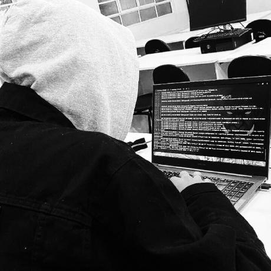
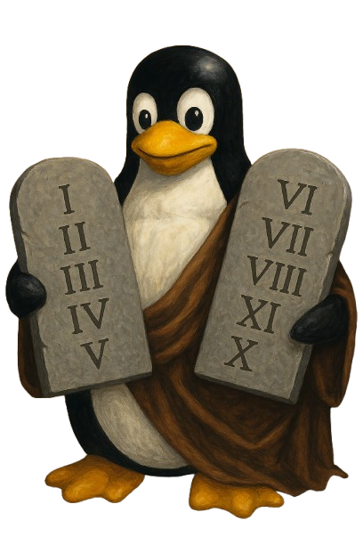

Welcome
Sou o Diego
* 1º lugar na Maratona de Programação Interna da Unifucamp - 2023
* Participei da Maratona de Programação Mineira - 2023
* Participei da Maratona de Programação Pizza++ UFU - 2023
Estudante de Ciência da Computação, com foco em cibersegurança, programação de baixo nível e desenvolvimento backend. Estudo PHP, C, Assembly, MySQL e Linux.
/* open your source, open your mind */

10 mandamentos Linux
Post Original Reddit
E Tux, o pinguim sagrado, desceu da Montanha do Kernel trazendo consigo tábuas de código-fonte gravadas pelo próprio Torvalds. E assim falou aos seus seguidores:
I. Não Terás Outros Sistemas Antes de Mim Pois Windows é apenas uma janela, mas Linux é um portal para a liberdade. (Mas podes manter um dual boot para jogos, não julgarei tua fraqueza).
II. Não Farás Para Ti Backups Falsos Backup frequente farás, ou teus arquivos lamentarás. O que não está em três lugares diferentes não existe.
III. Não Tomarás o Nome do Root em Vão Pois com grandes privilégios vêm grandes responsabilidades. Um "sudo rm -rf /" casual pode transformar teu sistema em pó.
IV. Lembra-te do Dia do Update para o Santificar Seis dias trabalharás e farás todo o teu código, mas o sétimo dedicarás para atualizar teus pacotes e ler as mensagens do kernel.
V. Honra tua Documentação e teus Fóruns Para que teus problemas sejam resolvidos e longos sejam teus dias no terminal.
VI. Não Matarás Processos Inocentes Verifica duas vezes antes de executar "kill -9", pois cada processo tem um propósito, mesmo que pareça misterioso.
VII. Não Cometerás Reinstalação Quando teu sistema quebrar, conserta-o! Reinstalar é o caminho dos fracos. (Exceto se for Arch, então reinstalar é praticamente um ritual semanal).
VIII. Não Furtarás Software Proprietário Código aberto compartilharás, e para projetos que usas contribuirás, nem que seja com um simples relatório de bug.
IX. Não Dirás Falso Testemunho Contra o Terminal O problema quase sempre está entre a cadeira e o teclado. Antes de culpar o sistema, quatro vezes verificarás teus comandos.
X. Não Cobiçarás a GUI do Teu Próximo Pois a linha de comando é poderosa, e em modo texto está a salvação. Contudo, um DE bonito não é pecado, desde que saibas o que roda por baixo.
E os usuários ouviram estes mandamentos e, após compilarem o kernel pela terceira vez sem erros, viram que era bom. E Tux disse: "Que vossos sistemas nunca travem e vossas permissões estejam sempre corretas."
